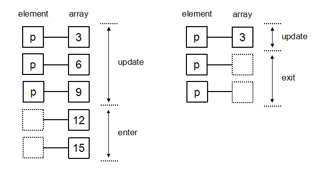

Explains asynchronous loading and field mapping using the new-student dataset (synthesized by DeepSeek)
Your Original Case
This chapter uses the 2025 new-student data from China University of Petroleum (East China) to illustrate the characteristics of data. To prevent data privacy leaks, the data was generated by the DeepSeek large language model. The data file data/newstudent.csv contains 80 records.
Embedded Theory: The Trustworthiness Boundary of AI-Synthesized Data
Four Dimensions of Data Quality (Wang & Strong 1996): Accuracy / Completeness / Consistency / Timeliness.
Data Generated by DeepSeek:
✅ Completeness: all fields present
⚠️ Accuracy: names/hometowns are fictional and cannot be used for real demographic analysis
⚠️ Sampling bias: the model tends toward 'plausible-looking' distributions (e.g., over-representing the Han ethnicity, favoring large cities for hometowns)
Classroom Takeaway: Using synthetic data in teaching is fine, but it must be labeled as 'synthetic data' to prevent students from mistaking it for a real distribution.
Key Code ① Field Name Mapping
Map Chinese column names to English variable names — to avoid syntax/encoding issues caused by Chinese keys in JS.
Key-Point Explanation: Why not use Chinese keys? (1) JS engines have poor tolerance for Chinese identifiers (older browsers throw errors); (2) backends, JSON, and URL encoding may introduce mojibake; (3) IDE autocomplete, search, and refactoring tools have inconsistent support for Chinese. Best Practice: Use human-readable Chinese names in CSV, and use unified English variables internally in JS.
Key Code ② Type Conversion Functions
After CSV loading, all fields are strings; you need to convert the index/age to Number and the birthday to a Date object.
Key-Point Explanation:+d["年龄"] is the unary plus operator, the fastest way in JS to convert a string to a number (shorter than Number() / parseInt()); new Date(str) can parse ISO formats like "2007-08-15", but has poor compatibility with "2007/8/15", so fall back to d3.timeParse("%Y-%m-%d"). Pitfall: Without trim(), the trailing space in "软件工程1班 " will cause later filtering/aggregation to fail.
Key Code ③ Pass the row callback directly as the second argument of d3.csv
Key-Point Explanation: d3.csv is an asynchronous function and must be awaited. The row callback in the second argument is invoked immediately after each row is parsed — which saves memory compared to first await d3.csv(...) then .map(transformRow) (transform while reading). Significance of Asynchronous Loading: It does not block page rendering, so the user can keep interacting.
Click 'Reload' to see the asynchronous CSV loading, field mapping, and type conversion → output the transformed table + console logs.
Loading demo…
1.2
Data Definition
DIKW Pyramid — Data → Information → Knowledge → Wisdom
Your Original Case
DIKW Pyramid: Data is 'raw data', Information is 'organized data', Knowledge is 'patterns/regularities', and Wisdom is 'judgment/strategy'.
Tier
Term
Question Answered
Data
Raw, discrete observations
—
Information
Data that has been processed, organized, and given context
Who / What / When / Where
Knowledge
Further refinement and understanding of information
How
Wisdom
Applying knowledge to make wise judgments and strategic decisions
Why / What to do
Embedded Theory: The Position of Visualization in the DIKW Model
Key Insight: Visualization mainly lifts Data to Information; in a few scenarios it can reach Knowledge, but it is difficult to cross over to Wisdom.
✅ Data → Information: 'Translate' the table into readable graphics (line chart, bar chart, heatmap)
❌ Knowledge → Wisdom: Decisions and strategy are beyond the capability of visualization
Rowley (2007) Critique: DIKW is an oversimplified hierarchical model; in reality the boundary between Data and Information is blurred. But as a teaching scaffold, it remains most valuable.
Key Code ① SVG Pyramid Path
The pyramid is composed of 4 trapezoids joined together — the d attribute of the D3 path.
js1 key lines
⭐// 关键点 ①：trapezoid 路径 —— 从上到下 4 个点的连线const topW = 60, botW = 120;
const yTop = 20, yBot = 100;
const path = `
M ${cx - topW/2}${yTop}
L ${cx + topW/2}${yTop}
L ${cx + botW/2}${yBot}
L ${cx - botW/2}${yBot}
Z
`;
Key-Point Explanation: The SVG path commands M (moveto), L (lineto), and Z (close) are the three most commonly used. Template literals `${...}` can embed JS variables directly, making them more readable than string concatenation. Practice: For complex shapes, use D3's d3.symbol() (which has built-in ★●▲ etc.); hand-writing paths is error-prone.
Key-Point Explanation: You must use function() instead of arrow functions — because D3 callbacks use this to access the current element, and arrow functions capture the outer this, causing it to fail. This is the most common D3 pitfall. transition().duration() is D3's built-in animation API, even more concise than jQuery.
Hover over the pyramid → highlight that tier · click → show that tier's definition / examples / common visualizations on the right
Key-Point Explanation: A D3 scale's domain() is the data domain (input) and range() is the value range (output pixels). Choosing the wrong scale is the most common beginner mistake: using scaleLinear for categorical data produces meaningless intermediate values (e.g., class 0.5). Memory Aid: Use Linear for continuous quantitative, Band for discrete categorical, and Point for ordinal.
Key Code ② Colormap Selection
js1 key lines
⭐// 关键点 ②：颜色映射 —— 顺序型 vs 定性型 vs 发散型// 顺序型（顺序有意义）→ interpolateViridis / interpolateBluesconst color = d3.scaleSequential(d3.interpolateViridis);
// 定性型（无顺序）→ schemeTableau10const color = d3.scaleOrdinal().range(d3.schemeTableau10);
// 发散型（有中点）→ interpolateRdBuconst color = d3.scaleDiverging(d3.interpolateRdBu);
Key-Point Explanation: Viridis is the benchmark sequential colormap — color-vision-deficiency (CVD) friendly and perceptually uniform. Common Mistake: Using the rainbow colormap interpolateRainbow to encode numerical data — it is neither CVD-friendly nor free of false boundaries (blue→green jumps). Class Question: When to use a diverging colormap? Answer: Data that has a 'middle value' (e.g., positive/negative, temperature vs. average).
4 sub-demos: ① Categorical uses hue (✓) ② Ordinal uses brightness (✓) ③ Numerical uses position (✓) ④ ❌ Numerical uses hue (mismatch — cannot tell magnitude)
Loading demo…
1.4
Data Transformation
D3's 8 Functional Array Operations
Your Original Case (8 Functions)
Your original text lists 8 common functions provided by D3:
map(iterable, mapper) — similar to Array.map
reduce(iterable, reducer, init) — similar to Array.reduce
cross(...iterables, reducer) — Cartesian product
merge(iterables) — merge into a flat array
pairs(iterable, reducer) — adjacent element pairs
transpose(matrix) — matrix transpose
zip(...arrays) — combine by position
filter(iterable, test) — similar to Array.filter
Embedded Theory: Functional Data Flow
Common characteristics of these 8 functions:
✅ Immutable: input unchanged, returns a new array
✅ Pure function: same input → same output, no side effects
✅ Chainable: returns an array, can be followed by the next transformation
Why Functional?
Can be reasoned about: each transformation layer is independent and testable
Parallelizable: map/reduce/filter are naturally parallelizable
Cacheable: outputs of pure functions can be memoized
The Prototype of the Data Cube (OLAP): transpose performs wide/long format conversion, and group + rollup performs slicing/dicing/drilling — this is exactly the core of BI systems.
Key Code ① Chained Composition of map / reduce
js1 key lines
⭐// 关键点 ①：函数式数据流 —— map 后接 filter 再 reduceconst avgAge =
students
.filter(s => s.gender === "男") // ① 过滤男生
.map(s => s.age) // ② 提取年龄
.reduce((sum, a) => sum + a, 0) // ③ 合计
/ students.filter(s => s.gender === "男").length; // ④ 求平均
Key-Point Explanation: Each step of the chained call returns a new array and does not modify the original array. Compared with Imperative: The imperative style needs 4 temporary variables + a for loop, while the functional style does it in one line. Performance Trade-off: Each map/filter creates a new array, which incurs a performance cost for very large arrays (only significant above the million level).
Key-Point Explanation: The Cartesian product is commonly used in 'pairwise combination' analysis (e.g., counting students by gender × major). The second reducer argument is optional and is used to 'combine' the two elements. Extension: The Cartesian product of 3 arrays yields 8 combinations; for n arrays it is the product of their sizes.
Key Code ③ group / rollup (Aggregation)
js1 key lines
⭐// 关键点 ③：group 与 rollup —— 层次聚合// group 返回 Map（保留所有元素）const byClass = d3.group(students, s => s.class);
// rollup 返回 Map（每个 key 只保留聚合值）const countByClass = d3.rollup(
students,
v => v.length,
s => s.class
);
Key-Point Explanation: group vs rollup is the difference between 'keep groups' and 'aggregate groups'. The second argument of rollup is a reducer function (here it takes the length); in later chapter doc-02, rollup will be used in detail for tree-structured data.
Use the dropdown to switch among the 8 functions; the right side shows input/output comparison + a real scenario (new-student data)
Loading demo…
1.5
D3 Selectors
Selection and the enter / update / exit Three-State Model
Your Original Case (6 Selector Methods)
Your original text outlines 6 selector methods:
Method
Returns
d3.select
single element
d3.selectAll
selection of multiple elements
selection.select
the first descendant of each selected element
selection.selectAll
all descendants
selection.selectChild
the first direct child element
selection.selectChildren
all direct child elements
Embedded Theory: The Data-Join Three-State Model (Mike Bostock)
The core of D3 is Data-Join: 'binding' a data array to DOM elements.
When the data changes:
New data > old data: the extras enter enter (need to append)
New data = old data: the existing elements enter update (need attribute changes)
New data < old data: the surplus elements enter exit (need to remove)

Data-Join vs Imperative DOM
Imperative
Declarative (Data-Join)
createElement then append one by one
.data(arr).join(...) in one line
full re-render
incremental update (better performance)
element identity lost
key function preserves stable identity (natural animation)
disconnected from the data flow
naturally fits the functional data flow
Key Code ① .join(enter, update, exit) Three States
Key-Point Explanation: The three callbacks of join are invoked in the enter / update / exit phases respectively. This 'declarative three-state' pattern is more concise than the v3 enter().append() + exit().remove() style, and less error-prone. Analogy: React's diff + patch — the same idea, but React does it for you, while D3 lets you write the transformation functions yourself.
Key-Point Explanation: The key function is the soul of D3 animation. Without a key, D3 binds identity by index: reordering data causes 'all elements to move'. With a key, each circle knows its id, and on reorder only cx changes, so the transition animation is natural. Analogy: Exactly the same idea as React's key={item.id}.
Key-Point Explanation: select is used to 'operate on a single element', and selectAll is used to 'bind data in bulk'. Common Mistake: When using selectAll(".bar") to bind data to an array, the number of elements must match the number of data items, otherwise it will 'leave gaps' or 'overflow'. Best Practice: First use selectAll to create placeholder elements (possibly empty), then .data().join(...).
Click the button to trigger enter (green) / update (blue) / exit (red), and observe the three-state switching